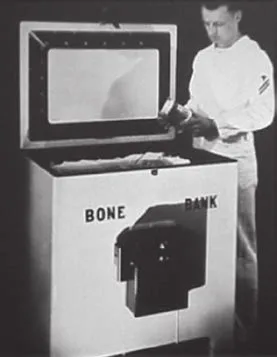
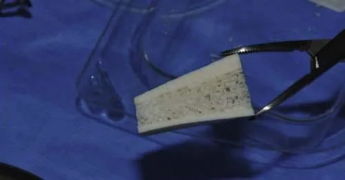

نسخه استخراجشده؛ ترجمه یا تأیید علمی انجام نشده است. وضعیت: captured
اتوگرافت — استخوان خود بیمار. تنها مادهای که هر سه سازوکار را دارد، چون تنها مادهای است که سلول زنده میآورد. هزینهاش: محل دوم جراحی و عوارض مستقل آن — همانطور که در یونیت ۹ دربارهی رضایت آگاهانه دیدی.
آلوگرافت — از انسان دیگر. تعریف دقیقش: انتقال سلول، بافت یا عضو به گیرنده از اهداکنندهای از همان گونه که از نظر ژنتیکی یکسان نیست.
و نکتهی مهم پردازش: آلوگرافتها روشهای معمول استریلیزاسیون فلز و پلاستیک را تحمل نمیکنند، چون چنین فرآوریای خواص مکانیکی و زیستی لازم برای کاربرد بالینی را از بین میبرد.
یعنی یک تنش ذاتی در فرآوری آلوگرافت هست: هرچه فرآوری شدیدتر برای ایمنی، خواص زیستی کمتر. و همین توضیح میدهد چرا انواع مختلف آلوگرافت — FDBA و DFDBA — رفتار متفاوتی دارند.
از یونیت ۱۴ به یاد بیاور: FDBA بهدلیل نمکهای کلسیم و فسفات باقیمانده کندتر جذب میشود و فضا را بهتر حفظ میکند؛ DFDBA دمینرالیزه شده و در عوض فعالیت استئواینداکتیو بیشتری دارد. یعنی ساختار در برابر فعالیت — همان معاوضهی همیشگی.
و یک نکتهی نظارتی: فرآوردههای آلوگرافت وقتی بیش از حداقل فرآوری شده باشند، از نظر سازمان غذا و دارو وسیلهی پزشکی محسوب میشوند. همچنین آلوگرافتهای بافت نرم — درم غیرسلولی، فاسیا لاتا و پریکارد — بهطور مداوم در حال اصلاحاند.

زنوگرافت — از گونهی دیگر. نمونههای رایج: مواد با منشأ گاوی یا خوکی — استخوان کنسلوس یا ممبران کلاژن. و یک نمونهی جالب: مواد مشتق از مرجان.
آلوپلاست — مادهی مصنوعی. نمونهی شاخصش TCP (تریکلسیم فسفات) است که زیستسازگاری و استئوکانداکتیویتی خوبی دارد و معمولاً بهعنوان پرکنندهی نسبتاً جذبشونده به کار میرود که با استخوان تازهی تشکیلشده جایگزین میشود.
و سولفات کلسیم نمونهی دیگری است که وقتی بهعنوان بریر جذبشونده به کار میرود، مکمل سایر مواد پیوند است — نه جایگزین آنها.
الگوی کلی چهار خانواده را ببین:
هرچه از اتوگرافت به سمت آلوپلاست میروی، فعالیت زیستی کم و در دسترس بودن و ایمنی بیشتر میشود. اتوگرافت هر سه سازوکار را دارد ولی محل دوم جراحی میخواهد؛ آلوپلاست فقط استئوکانداکتیو است ولی نامحدود و بدون ریسک انتقال بیماری است.
و یک قاعدهی مشترک همهی خانوادهها: تمام مواد جایگزین استخوان و ممبرانها، اگر جداگانه بستهبندی شده باشند، برای مصرف تکبیمار تعیین شدهاند. اصطلاح ممکن است فرق کند — مثلاً «یکبارمصرف» — ولی همین قصد برای زنوگرافت و آلوپلاست هم وجود دارد و ممکن است روی برگهی راهنمای بسته بیاید.
و یک توصیهی همیشگی: همیشه به سند دستورالعمل مصرف همراه هر ماده یا ممبران مراجعه کن.

نوع سؤال: ساخت کلمه · 10 خانه
حروف منبع: ل · ع · م · ر · ا · س · و · د · ت · ل